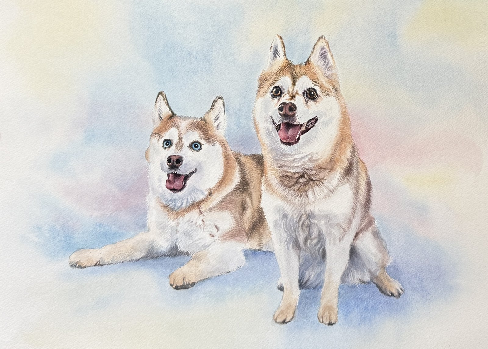
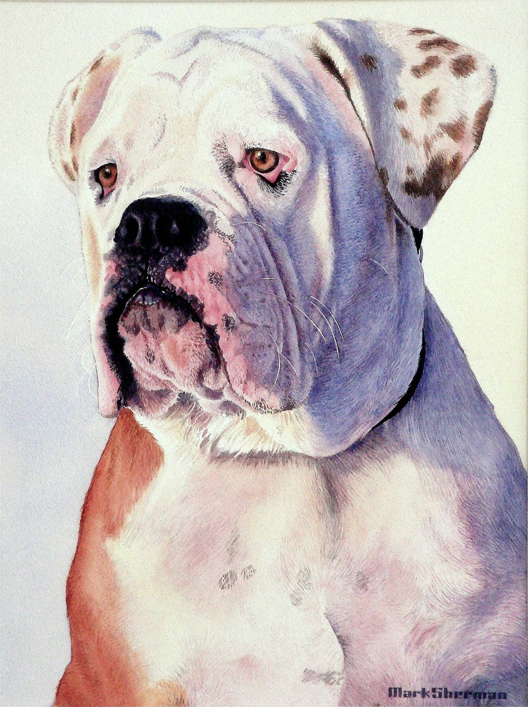

Portraits
A photograph can capture the likeness of a person like a mirror; but a portrait is a study of a subject — an opportunity to capture a spirit.
Artist Mark Sherman can paint a portrait of your loved one from a favorite photograph.
Realistic watercolor · San Diego
Original watercolors on archival 300 lb Arches paper, double matted and framed. Click a painting to see it larger.


A photograph can capture the likeness of a person like a mirror; but a portrait is a study of a subject — an opportunity to capture a spirit.
Artist Mark Sherman can paint a portrait of your loved one from a favorite photograph.
Specializing in paintings of your dog, cat, bird, fish or livestock, all commissions are completed in beautiful watercolor to create a timeless piece of art that you will cherish forever. Working from your favorite photograph, every picture is produced with the greatest attention to detail.
A family heirloom — a beautiful illustration of your home, either in watercolor or pen-and-ink. Architectural renderings of homes, business establishments or other buildings are produced with stunning accuracy.
Mark Sherman is available to create a watercolor painting of your favorite wildlife, scenic landscape, or perhaps your favorite flower.
A Brooklyn-born original, Dr. Mark Sherman's award-winning work as a watercolorist was diverted while he temporarily pursued an academic career as a professor of clinical psychology for three decades. When he returned to art, Dr. Sherman's first painting was of the Old Point Loma Lighthouse, in San Diego — and thus began a trend.
Lighthouse enthusiasts have become avid collectors of Mark Sherman's watercolor creations, and prints of his remarkable lighthouse series have been nominated for excellence by Collector Editions and by the National Association of Limited Edition Dealers (NALED). Award-winning portraits, pet portraits and wildlife illustrations add to the reputation of this acclaimed watercolorist.
For commissions, questions about a painting, or a studio visit:
Del Mar, California